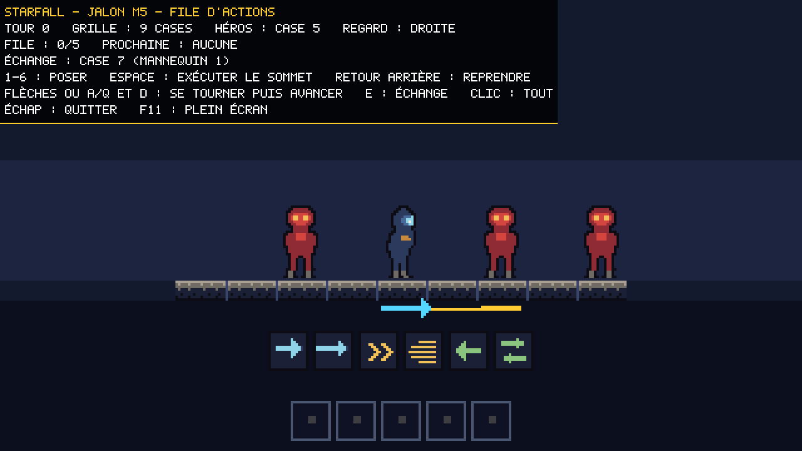
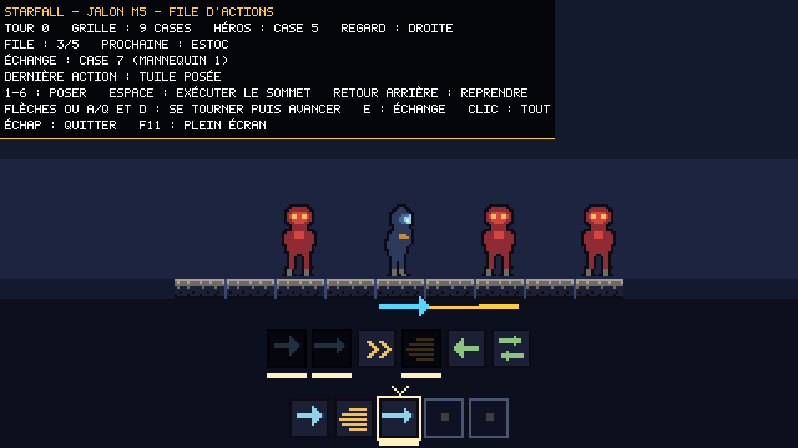
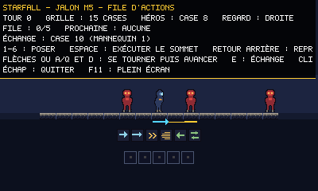
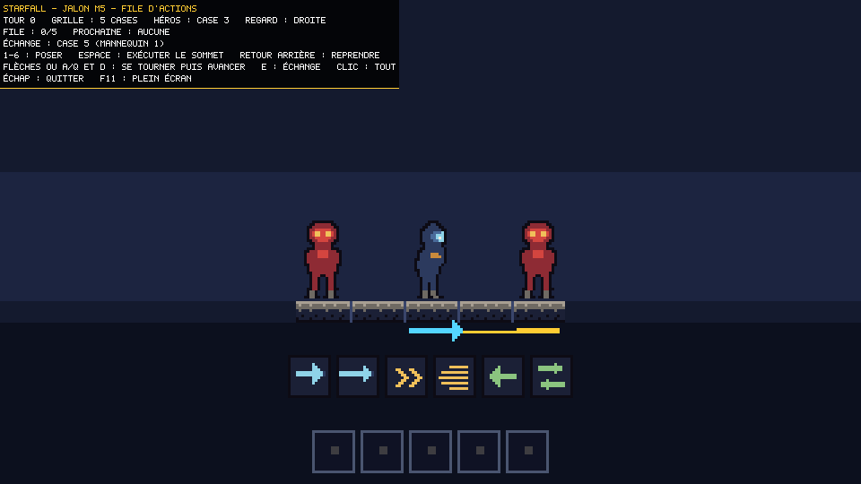
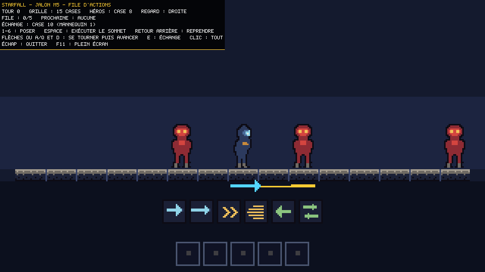
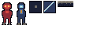
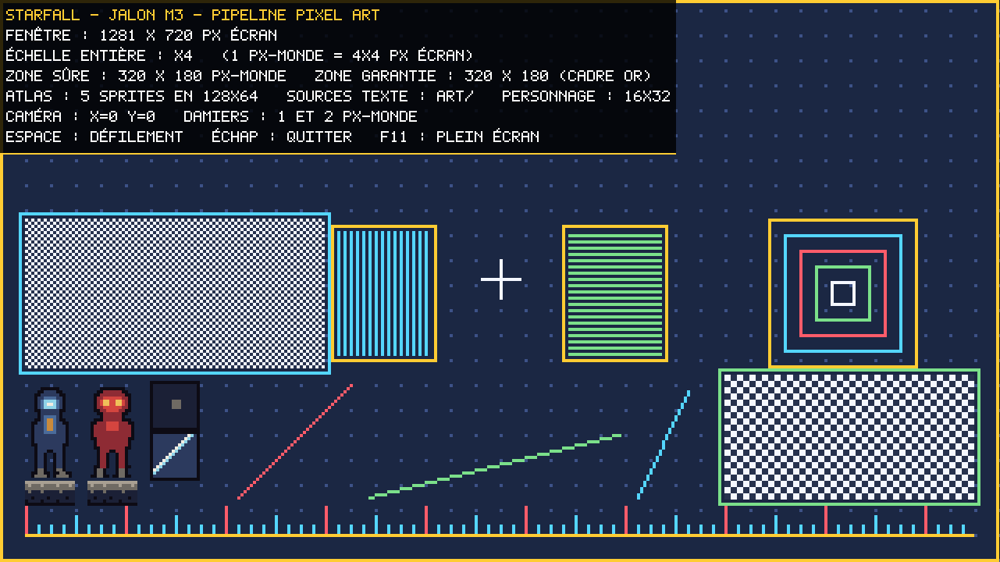
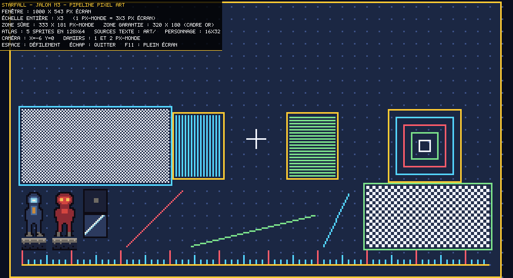
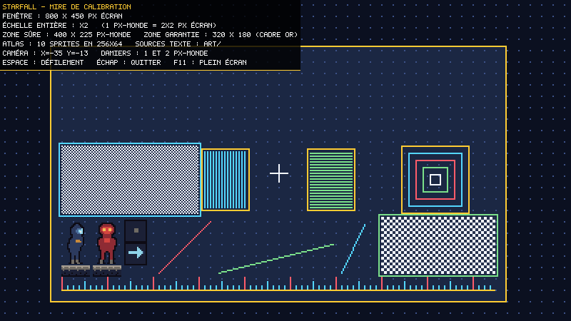
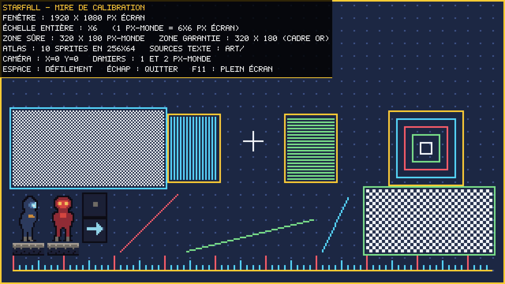

| Identité | Hommage assumé à Shogun Showdown. Pas de réinterprétation onirique. |
| Périmètre | Tranche verticale finie : 1 héros, 1 biome, 3–5 vagues puis 1 boss, ~10–12 tuiles, ~4 types d'ennemis.Tout ce qui est dedans est terminé au niveau de la barre de review — plutôt que beaucoup de contenu brouillon. |
| Moteur | libGDX, Java 25 (Temurin détecté), LWJGL3 desktop, wrapper Gradle embarqué. |
| Art | Pixel art authorié comme source texte : grilles de caractères indexées sur une palette, converties en atlas PNG par une étape de build.Versionnable, relisable, et modifiable entre deux passes de review — contrairement à des PNG opaques. |
| Résolution | Taille de pixel fixe (personnages 32 px), viewport qui s'adapte. Pixels carrés et nets à toute taille de fenêtre ; fenêtre redimensionnable et plein écran. |
| Entrées | Clavier et souris, les deux de plein droit. |
| Grille | Largeur configurable de 5 à 15 cases. |
| File d'actions | 5 tuiles (au lieu de 3 dans la référence). Exécution dernier-entré → premier-sorti.Seul écart mécanique délibéré vis-à-vis de la référence. Voir « Points d'attention » plus bas. |
| Orientation | Se retourner coûte une action : appuyer vers une direction que l'on ne regarde pas fait pivoter sans avancer.Tranché le 4 août 2026. Deuxième écart mécanique délibéré vis-à-vis de la référence, où l'on se retourne et avance d'un même geste. L'orientation devient une décision tactique à part entière, ce qui va de pair avec une file d'actions où chaque tour compte. |
| Fidélité | Boucle centrale exacte : file LIFO, recharges en points, tuiles Free-Play, intentions ennemies télégraphiées, traits (Agressif / Rapide / Explosif / Fonceur), combo kills. Contenu original, mais archétypes calqués sur la référence : héros de type Vagabonde (échange de place), ennemis mêlée / chargeur / distance / agressif, boss qui invoque et charge. |
| Audio | Aucun. |
| Langue | Textes et interface en français, commentaires et docs en français, identifiants de code en anglais (convention Java).Tranché le 4 août 2026 : le code appelle en permanence une API anglaise, et mélanger grille.tuileEn(x) avec batch.draw(...) se lit mal. Ce n'est plus une hypothèse. |
| Boucle de review | Agent de review indépendant, contexte neuf, aucun lien avec l'agent qui a produit le code. Maximum 3 passes par item, puis l'objection non résolue est consignée dans « Besoin de ton avis » et on avance. |
| Versionnement | Branche asblack sur github.com/geleouet/starfall, commit à chaque jalon revu.main était vide (« Start over: main reset to an empty state ») — la branche part donc d'une base propre. |
| État | Jalon |
|---|---|
| revu | M1 — Squelette et amorçagelibGDX 1.14.2, Gradle 9.6.1, toolchain Java 25, viewport à échelle entière, scène de test, capture PNG automatisée. Review indépendante passée : elle a conclu « M1 ne tient pas ». Défaut central corrigé, 85 tests verts sur 12 suites (contre 26 sur 5). Voir le journal de review. |
| revu | M2 — Harnais de captureAvancé et replié dans M1 : --screenshot <dir> --size WxH --frames N rend puis quitte proprement, sans intervention humaine. Durci après review : refuse désormais de faire croire au succès quand la fenêtre obtenue n'est pas celle demandée, quand une option est mal orthographiée, ou quand les images seraient toutes identiques. |
| revu | M3 — Pipeline pixel artPalette maître en texte, format .sprite (grilles de caractères indexées), générateur d'atlas déterministe branché sur le build, chargement et rendu à l'écran. 5 sprites de démonstration. Review indépendante passée : « tient avec réserves ». 8 défauts relevés, tous corrigés ; 147 tests verts sur 17 suites. |
| revu | M4 — Grille et hérosGrille linéaire de 5 à 15 cases, déplacement, orientation, capacité d'échange de place, cadrage caméra. Clavier et souris. Review indépendante passée : « tient avec réserves ». 8 défauts relevés, tous corrigés ; 271 tests verts sur 25 suites. |
| revu | M5 — Système de tuilesFile de 5, exécution dernier-entré premier-sorti, recharges en points, tuiles Free-Play, ajout et retrait sans coût de tour. Six tuiles, jouables au clavier et à la souris. Review indépendante passée : « tient avec réserves ». 5 défauts relevés, tous corrigés ; 318 tests verts. |
| suivant | M6 — Ennemis et intentions4 archétypes, traits, IA de file, bulles d'intention télégraphiées. |
| à venir | M7 — Résolution du combatDégâts, statuts, collisions et repoussements, combo kills, enchaînement des vagues. |
| à venir | M8 — InterfaceHUD, barre de file, portées d'attaque, PV, infobulles — en français. |
| à venir | M9 — BossRencontre finale de la tranche : invocations, combo charge + frappe. |
| à venir | M10 — Équilibrage file de 5Réaccordage complet des recharges et de la pression ennemie autour de la file élargie. |
| La file | 5 emplacements, exécution dernier entré premier sorti.Poser trois tuiles coûte trois tours de vulnérabilité, mais les exécuter enchaîne trois effets pendant que les ennemis n'avancent que d'un cran. Toute la tension du jeu est dans ce décalage. |
| Poser, reprendre | Gratuits. Ni l'un ni l'autre ne consomme de tour, et reprendre ne met pas la tuile en recharge : elle n'a pas servi.Se préparer ne doit jamais punir. On peut remuer la file autant qu'on veut sans que le temps passe — un test le vérifie sur 50 allers-retours. |
| Recharges | Une tuile exécutée réclame de 2 à 3 points. Chaque tour consommé donne un point à toutes les tuiles en recharge.C'est ce qui donne son prix au temps : la seule façon de récupérer ses tuiles est d'en dépenser. |
| Free-Play | Deux tuiles s'exécutent sans consommer de tour : pas de côté et volte-face.La soupape du système. Sans elle, se repositionner coûterait toujours un tour et la file ne serait qu'une punition. La volte-face vaut particulièrement cher ici, puisque se retourner coûte normalement un tour. |
| Six tuiles | Frappe et estoc (portée 1 et 2), poussée et élan, pas de côté et volte-face.Il en faut plus que d'emplacements de file : une tuile est soit au râtelier, soit sur la file, jamais les deux. Avec cinq tuiles ou moins, la file ne pourrait jamais être pleine. |
| Échec | Une tuile dont l'effet échoue est consommée et rechargée, mais ne coûte pas de tour.C'est le prix de l'avoir jouée — sans faire payer deux fois une décision déjà punie. |
| Grille | Une ligne de 5 à 15 cases, une case = un occupant au plus.La grille est la seule détentrice des positions : un occupant ne connaît pas la sienne. Deux sources de vérité, c'est une désynchronisation qui attend son heure. |
| Orientation | Appuyer vers là où l'on ne regarde pas fait se retourner, sans avancer. Appuyer vers là où l'on regarde fait avancer.Écart assumé vis-à-vis de la référence, et validé : c'est désormais une décision verrouillée. |
| Capacité | La Vagabonde échange sa place avec le premier occupant devant elle, aussi loin soit-il.Elle traverse une ligne au lieu de la subir, et laisse une cible là où elle était. |
| Souris | Un clic ne déclenche jamais plus d'une action : le seul pas qui rapproche de la case visée.Sinon un clic à l'autre bout enchaînerait plusieurs tours d'un coup, ce qui n'a aucun sens au tour par tour et rendrait la souris moins précise que le clavier. |
| Cadrage | Caméra calée sur le centre de la grille. Une case fait 20 px-monde, donc 15 cases font 300 px : toute grille tient dans la zone garantie de 320, quelle que soit la fenêtre.Une case de 24 px aurait débordé et forcé la caméra à couper une case selon la partie. |
| Sources | art/palette.txt — une ligne par couleur, <code> <nom> <RRGGBB>art/sprites/*.sprite — grilles de caractères, un caractère par pixelC'est la vérité du projet : versionnable, relisable dans un diff, modifiable entre deux passes de review. |
| Étape de build | gradlew :core:generateAtlas, déclenchée automatiquement par build et runSortie déterministe : mêmes sources, même PNG octet pour octet — sans quoi chaque build ferait bouger les captures de review. |
| Sortie | assets/generated/starfall-atlas.png + .txtProduit dérivé, ignoré par git, jamais édité à la main. |
| Erreurs | Signalées fichier:ligne: et fatalesLigne trop courte, code couleur inexistant, nom en double, directive inconnue. Jamais un sprite tordu qui s'affiche quand même. |
| Jouer | run.bat (double-clic) ou gradlew.bat :lwjgl3:run |
| Autre grille | run.bat --grid 15 — de 5 à 15 cases |
| Mire de contrôle | run.bat --scene calibrationLes motifs de non-régression des jalons M1 et M3. Ils ne servent pas au joueur, mais les perdre reviendrait à perdre la preuve que la grille de pixels et le pipeline d'art sont intacts. |
| Capturer | run.bat --screenshot captures\m1 --size 1280x720 --frames 2Image 0 au repos, images suivantes caméra en mouvement. Reproductible d'une exécution à l'autre. |
| Aide | run.bat --help |
| Contrôles | Espace : défilement · Échap : quitter · F11 : plein écran |
| Codes de sortie | 0 succès · 1 plantage · 2 ligne de commande invalide · 3 capture non conforme à la taille demandéeTout ce qui n'est pas 0 doit faire échouer la boucle de review, jamais passer inaperçu. |





La mire de calibration porte les deux jalons précédents à la fois : les motifs de contrôle de M1 — damiers d'1 et 2 px, rayures, diagonales, règle graduée — et, adossés à eux, les sprites de M3 chargés depuis l'atlas. Un sprite flou ou décalé se voit immédiatement à côté d'un damier d'1 px. Cinq tailles de fenêtre, dont deux volontairement bâtardes. La première image de chaque capture est cadrée au repos ; les suivantes montrent la caméra en mouvement sur des cibles fractionnaires.


(0,4) (424,4) (556,4) …, toutes exactement 4 px, la première comprise.


Relecteur en contexte neuf. Il a fuzzé 3,2 millions d’actions en contrôlant les invariants après chacune, confronté ActionQueue à un modèle de référence sur 4 millions d’opérations, balayé le plan monde au demi-pixel pour les 11 largeurs de grille, et analysé ses propres captures pixel par pixel.
Ce qu’il a confirmé : le LIFO est strict, y compris à la reprise au milieu de la file ; l’invariant « une tuile est au râtelier ou sur la file, jamais les deux, jamais nulle part » ne casse jamais ; les points de recharge restent dans leurs bornes ; poser et reprendre sont réellement gratuits ; aucun tour ne peut avancer sans action réelle ; et les trois zones cliquables ne se recouvrent à aucune échelle. M1, M3 et M4 sont intacts après le déplacement vertical de l’arène.
Mais la comptabilité des tours avait un trou, et c’est une régression que j’ai introduite. En ajoutant le comptage des tours, j’ai mis consumeTurn() à trois endroits d’Arena et oublié le quatrième : le demi-tour du clic, qui dupliquait la logique de step() au lieu de la déléguer. Mesuré par le relecteur : 100 demi-tours à la souris = 0 tour, 100 au clavier = 100 tours. Pire, cela vidait de sa valeur la volte-face Free-Play — la vitrine même du système — puisqu’un simple clic offrait gratuitement ce que la tuile faisait payer en recharge. Corrigé en supprimant la duplication : clickOn délègue désormais à step. Une règle écrite à deux endroits finit toujours par diverger.
Le repère « prochaine tuile » était illisible. Trois défauts cumulés, tous vérifiés au pixel : le chevron pointait vers le haut, donc vers le râtelier ; il était dessiné dans la gouttière du râtelier, à 1 px de celui-ci ; et les repères du râtelier le repeignaient partiellement, parce qu’ils partageaient la même bande de quatre pixels. Corrigé : les bandes de repères sont maintenant déclarées dans HudLayout — donc vérifiables sans contexte graphique — le râtelier est descendu, et le repère est devenu triple : cadre autour de la tuile, trait sous elle, et chevron pointant vers elle.
Le vert disait deux choses contradictoires. Le repère de disponibilité du râtelier utilisait exactement le vert des tuiles Free-Play : au repos, les six tuiles portaient un trait vert, alors que la règle affichée est « vert = ne consomme pas de tour ». Un joueur cherchant le vert trouvait six réponses au lieu de deux. Corrigé : le repère de disponibilité est supprimé — la pleine lumière suffit — et un test relit art/palette.txt pour refuser toute couleur d’interface trop proche d’une couleur de famille. Ce test en a trouvé deux autres que le relecteur n’avait pas signalées : l’or de la file et l’ocre des recharges étaient les couleurs exactes de la famille « placement ».
Deux autres : le scénario de capture posait une volte-face au milieu de la file, si bien que les deux tuiles suivantes visaient une case vide — aucune capture livrée ne montrait donc un tour consommé ni une recharge qui descend, c’est-à-dire ni la monnaie ni le mécanisme du jalon ; et quatre figures du tableau de bord pointaient vers des dossiers de captures que M5 avait renommés.
Rejoué les mesures du relecteur : 100 demi-tours à la souris donnent maintenant 100 tours, comme au clavier ; « se retourner puis frapper » coûte 2 tours par les deux entrées ; et la volte-face retrouve son avantage — 0 tour contre 1 pour un clic.
Le nouveau scénario de capture enchaîne estoc, élan et frappe : les trois touchent, le compteur de tours monte, et les points de recharge descendent d’une image à l’autre. Les trous de test les plus graves sont comblés — et le trou de fond aussi : il n’existait aucun test d’invariant global, seulement des tests ponctuels. Il y en a maintenant un qui rejoue 80 000 actions aléatoires en vérifiant après chacune que le héros est unique, qu’aucune tuile n’est perdue ni dupliquée, que les recharges restent bornées, et qu’aucun tour n’est consommé sans que l’état du jeu change.
Avant même de lancer la review, j'ai piloté la fenêtre pour de vrai : curseur déplacé, clics et codes de balayage clavier envoyés, image de la fenêtre relue pour vérifier que le héros avait bougé à la bonne case.
1. La touche « A » ne faisait rien sur un clavier français. libGDX rapporte les touches par position physique sur une disposition américaine : Keys.A désigne la touche à l'emplacement du A américain, qui porte la lettre Q sur un AZERTY. Un joueur français appuyant sur la touche marquée A n'obtenait rien. Corrigé : Q est lié en plus de A.
2. Un clic traversait le bandeau d'interface. Le pointage ne tenait compte que de l'abscisse : toute la colonne d'une case était cliquable jusqu'en haut de la fenêtre. Corrigé : le pointage a maintenant une bande verticale.
Relecteur en contexte neuf. Il a fuzzé 800 000 actions (4 000 parties × 200 actions, toutes largeurs), rejoué le calcul de cadrage sur 11 largeurs × 18 tailles de fenêtre, analysé 22 captures qu'il a produites, et piloté lui aussi la fenêtre à coups d'injections Win32.
Ce qu'il a confirmé : aucun invariant du modèle en défaut sur 800 000 actions — le héros ne sort jamais de la grille, aucun occupant ne disparaît ni ne se dédouble, aucune case ne porte deux occupants ; le cadrage tient pour toutes les largeurs, vérifié à la fois par le calcul et en localisant la bande de dalles pixel par pixel ; un clic ne fait qu'un pas même bouton maintenu trois secondes ; le bandeau ne se traverse pas ; et le pointage suit bien la caméra — il l'a prouvé en cliquant pendant un défilement, là où un unproject naïf aurait désigné la mauvaise case. M1 et M3 sont intacts : ses captures de la mire sont identiques au pixel près aux références versionnées.
Mais l'affirmation de lisibilité la plus mise en avant du jalon était fausse. J'avais écrit, en commentaire, que le retournement du sprite était « la lecture la plus immédiate de où est-ce que je regarde ». Il a mesuré le sprite du héros contre son propre miroir : 16 pixels différents sur 512, tous dans les chaussures, et ces 16-là n'étaient qu'un artefact de gabarit. Le retournement était un no-op visuel. Toute l'orientation — pourtant une mécanique verrouillée — reposait sur un trait de 2 px sous les dalles, invisible pour qui regarde le personnage. Corrigé : le héros a été redessiné franchement directionnel — capuche pointue, visage cyan collé au bord avant, cape qui traîne derrière. Il diffère maintenant de son miroir par 188 pixels sur 512, répartis sur 27 lignes sur 32, et un test l'épingle.
2. La caméra de contrôle coupait des cases. Le défilement de démonstration hérité de M1 pilotait la caméra de toutes les scènes, avec une amplitude de 24 px-monde — alors qu'une grille de 15 n'a que 10 px de marge. Sur 55 instants échantillonnés, 40 coupaient la grille ; et comme --frames vaut 2 par défaut, toute capture d'une grille de 15 produisait une deuxième image décadrée. Corrigé : c'est désormais la scène qui dit où la caméra regarde. La mire garde son défilement, l'arène reste calée sur le centre de sa grille. Vérifié : sur 6 images d'une grille de 15, la bande de dalles occupe exactement les mêmes 1200 px.
3. L'arène ne peignait que 320×180. Sur toute fenêtre non 16:9, le reste de la zone sûre restait à la couleur d'effacement, avec une arête franche — à 400×240, un îlot cerné de noir qui ressemble à un bug d'affichage. Corrigé : le fond couvre toute la zone dessinée.
Cinq autres, tous corrigés : --grid 20 ouvrait la fenêtre puis plantait avec le code 1 au lieu de sortir en 2 ; le clavier pouvait déclencher trois actions dans une seule image (trois if indépendants) alors que la souris respectait la règle ; step(null) posait une orientation nulle en silence ; le test « la caméra reste calée sur le centre de la grille » était une tautologie, et la méthode qu'il testait n'était appelée nulle part en production — la caméra recopiait une constante ; et deux libellés de test affirmaient le contraire de ce qu'ils prouvaient.
Trous de test comblés. --grid et --scene, les deux options ajoutées par M4, n'étaient testées nulle part — c'est ce qui a laissé passer le défaut du code de sortie. On passe de 227 à 271 tests, dont un qui compare le héros à son miroir et un autre qui vérifie qu'il y a toujours une cible de chaque côté du héros, à toutes les largeurs.
Rejoué les scénarios du relecteur : --grid 20 sort maintenant en 2 avec l'aide, sans ouvrir de fenêtre ; sur 6 images d'une grille de 15, la bande de dalles est identique au pixel près ; à 400×240 le fond couvre toute la fenêtre.
Et une vérification que je devais à la mire : après avoir déplacé le défilement dans la scène, ses captures diffèrent des anciennes — j'ai localisé toutes les différences dans le rectangle monde x=12..25, y=27..56, c'est-à-dire exactement l'emplacement du héros dans la vitrine. Le changement vient du sprite redessiné, pas d'une régression de caméra.
Relecteur en contexte neuf. Il a réimplémenté de son côté la lecture de la palette et des quatre fichiers .sprite, puis comparé le résultat au PNG et à une capture qu'il a produite lui-même — 1664 pixels de l'atlas et 1376 pixels de la capture, tous exacts. Il a aussi décodé les blocs du PNG, rejoué le build sous deux JDK, et fuzzé 400 dispositions de rangement.
Ce qu'il a confirmé : le déterminisme est réel (aucun bloc tIME ni tEXt dans le PNG, index écrit avec des sauts de ligne explicites, mêmes empreintes sous JDK 21 et 25) ; le rangement est sain (0 chevauchement, 0 débordement, marge respectée sur 400 dispositions) ; la fidélité est exacte, sans décalage d'un pixel ni inversion verticale ; et les captures du dépôt se régénèrent octet pour octet.
Mais l'affirmation « analyse stricte, jamais un sprite silencieusement de travers » était fausse sur trois points, dont deux produisaient une image fausse en sortie 0 :
atlas n'écrase plus la première en silence.# dans une grille tronquait le sprite. Une grille de 9 colonnes terminées par # produisait un sprite de 8, sans un mot — et le contrôle de longueur ne rattrapait rien puisque toutes les lignes perdaient la même colonne. Corrigé : un # n'ouvre un commentaire qu'en début de ligne ; ailleurs c'est un code couleur, donc une erreur, avec un message qui explique la règle.@sprites était accepté comme @sprite. La comparaison se faisait par préfixe : une faute de frappe très plausible produisait un sprite parfaitement normal. Corrigé : comparaison sur le jeton entier.Cinq autres, tous corrigés : les hexadécimaux signés étaient acceptés (+ff000 fait bien six caractères) ; un sprite légitimement nommé atlas produisait un index que le jeu refusait de relire — mais seulement au démarrage, longtemps après un build vert ; la hauteur de l'atlas n'était pas bornée, donc rien n'empêchait de dépasser la taille de texture de la carte et de n'échouer qu'au chargement GL ; un fichier mal encodé donnait « échec d'écriture » sans nommer le fichier ; et @ était accepté comme code couleur alors qu'il ouvre une directive. #, @ et . sont maintenant explicitement réservés.
Trous de test comblés. Le relecteur a noté que la marge entre deux sprites n'était gardée par rien (le test de marge n'utilisait qu'un seul sprite, donc sans voisin), que le test de reproductibilité enchaînait deux builds à quelques millisecondes — donc qu'un horodatage à la seconde serait passé —, et qu'un test « les sprites réels passent le pipeline » sortait en silence si le dossier art/ n'était pas là où il l'attendait : vert sans rien vérifier. On passe de 129 tests à 147.
J'ai rejoué un par un les scénarios exacts avec lesquels le relecteur avait prouvé les défauts. Les cinq erreurs de format échouent désormais en sortie 1 avec fichier:ligne: et la colonne fautive. L'index trafiqué à l'identique de son expérience — hero/idle 115 33 16 32 dans un atlas 128×64 — arrête maintenant le jeu au démarrage : « la région « hero/idle » occupe 115,33 à 131,65, en dehors de l'atlas 128x64 », aucun PNG écrit.
Et après tous ces changements, l'atlas garde l'empreinte 2e3cdb08… que le relecteur avait calculée indépendamment, et les captures du dépôt se régénèrent octet pour octet. Les correctifs n'ont donc rien déplacé de l'image.
Relecteur en contexte neuf, aucun lien avec l'agent qui a écrit le code. Il a relu tous les fichiers, rejoué le build et les tests, écrit ses propres sondes, décodé les PNG livrés pixel par pixel et relancé le harnais à plusieurs tailles. 12 défauts confirmés, dont deux qui contredisaient frontalement ce que M1 affichait.
1. La zone garantie 320×180 était rognée. Le monde était arrondi vers le haut puis centré, ce qui coupait en deux la colonne de pixels de chaque bord — sans rien garantir sur le fait que la colonne coupée soit en dehors de la zone garantie. En 1281×720, la colonne monde x=0 n'était affichée que sur 2 pixels écran au lieu de 4. Les quatre captures livrées passaient toutes à côté du cas.
Vérifié moi-même avant d'accepter l'objection : échelle 4, monde arrondi à 321, origine écran −2, caméra à 0 — la zone garantie se retrouvait plaquée contre le bord coupé. Corrigé en séparant la zone sûre (entièrement visible, jamais rognée) de la zone dessinée (qui déborde d'une colonne de chaque côté uniquement pour boucher les gouttières). Le test qui manquait vérifie désormais la garantie en pixels écran et non en pixels calculés — c'est exactement par ce trou que le défaut passait.
2. Le harnais de capture pouvait mentir en sortie 0. Une demande de 3000×2000 produisait un PNG en 2884×1770 sans un mot, code de retour 0. Une faute de frappe (--frame au lieu de --frames) était signalée sur stderr puis ignorée, et produisait 2 images au lieu de 5, toujours en sortie 0.
Corrigé : l'analyse de la ligne de commande est stricte (toute option inconnue, valeur manquante ou valeur absurde est fatale, code 2) et le harnais compare la fenêtre obtenue à la fenêtre demandée (code 3 et message explicite en cas d'écart). Pour une boucle de review automatisée, un faux positif silencieux est le pire défaut possible.
Les dix autres, tous corrigés : le panneau d'interface recouvrait 48 % de la zone garantie à 320×180 — la taille minimale que le lanceur impose lui-même — alors qu'un commentaire affirmait le contraire ; --frames N écrivait N copies bit à bit de la même image ; les PNG n'étaient pas opaques (42 % des pixels à alpha 217, donc d'apparence variable selon le fond du visualiseur) ; écrasement et fichiers périmés silencieux ; débordement entier sur les tailles absurdes ; caméra non initialisée par le constructeur ; --help affichait l'aide puis ouvrait quand même une fenêtre ; API dépréciée ; double calcul de projection dont un sans garde-fou ; et les commentaires étaient en anglais alors que la convention du projet les veut en français — seul point de la convention qui était inversé, maintenant rétabli sur tous les fichiers.
Trous de test comblés. Le rapport notait que PixelViewport, LaunchOptions et PixelFont n'avaient aucun test, et que le balayage d'invariants avançait de 7 en largeur et de 11 en hauteur — il ne visitait donc ni 1281 ni 1281×721. On passe de 26 tests sur 5 suites à 85 sur 12, avec un balayage au pas de 1 sur 2000×1200 tailles de fenêtre.
Je n'ai pas pris le rapport pour argent comptant, et je n'ai pas non plus pris mes propres correctifs pour acquis. Ce qui a été re-mesuré sur les images produites après correction :
--help → aide puis arrêt, sans fenêtre.Build propre en sortie 0, sans avertissement de compilation, 85 tests verts sur 12 suites.
| à trancher | File de 5 : conséquence mécaniquePasser de 3 à 5 emplacements change beaucoup l'économie de tours : plafond de combo bien plus haut, engagement plus long, et davantage de tours passés à charger la file en étant vulnérable. Je vais recalibrer les recharges et la pression ennemie autour de ça plutôt que de reprendre les chiffres de la référence — mais si tu voulais 5 emplacements avec l'équilibrage d'origine, dis-le maintenant, ça change le jalon M10. |
| signalé | M1 — points non couvertsAucun n'est bloquant, mais autant que tu les saches : le plein écran (F11) est implémenté mais n'a jamais été testé automatiquement ; LWJGL est épinglé en 3.3.6 au lieu du 3.3.3 livré par libGDX, pour supprimer un avertissement JNI sous JDK 25 ; aux tailles non multiples, une colonne de débordement de moins d'un pixel-monde est visible sur les bords au lieu d'afficher des bandes noires — choix délibéré, et désormais explicitement en dehors de la zone garantie ; enfin run.bat renvoie le code 1 de Gradle et non le code 3 du jeu quand une capture n'est pas conforme (le message d'erreur, lui, est explicite). |
| signalé | M4 — ce qui reste ouvertLes occupants posés sur la grille sont des mannequins inertes : aucun comportement, ils occupent une case pour que la capacité d'échange ait quelque chose à viser, et empruntent volontairement le sprite d'ennemi plutôt que d'en avoir un à eux. Les vrais ennemis arrivent en M6. Deux remarques du relecteur que je n'ai pas traitées, et pourquoi : le trait de liaison et le repère de cible ne se distinguent que par l'épaisseur (1 px contre 2), ce qui demande de regarder à ×1 — un marquage sur la dalle cible trancherait mieux, mais il entrerait en concurrence avec le surlignage de survol, et je préfère trancher ça quand M5 aura ajouté ses propres repères ; et le surlignage de survol s'affiche sur des cases qu'un clic ne peut pas atteindre, ce qui reste à revoir avec l'interface de M8. Enfin le décor se réduit à trois bandes horizontales : tant que la lecture tactique n'est pas jugée nette, y ajouter de l'atmosphère ne ferait que masquer un défaut de lisibilité. |
| signalé | M3 — ce qui reste ouvertLe format ne porte pour l'instant que @sprite : pas de point d'ancrage, pas d'animation, pas de variantes de couleur. Rien de tout cela n'est nécessaire avant M6, et une directive inconnue est désormais refusée, donc l'ajout sera visible.Deux limites que je n'ai pas fermées, et pourquoi : aucun test « golden » ne relie art/ aux captures du dépôt — la reproductibilité est constatée à la main à chaque jalon, mais un tel test casserait à chaque modification volontaire d'un sprite, pour un bénéfice faible ; et la vérification de désynchronisation image/index dans SpriteAtlas n'est pas testée automatiquement, parce qu'elle demande un contexte OpenGL (la validation des régions, elle, a été déplacée dans AtlasIndex et est testée sans GL). Enfin les cinq sprites livrés sont des sprites de démonstration : le contenu réel vient avec M4 et M6, et c'est là que la barre « lisibilité tactique » s'appliquera vraiment. |